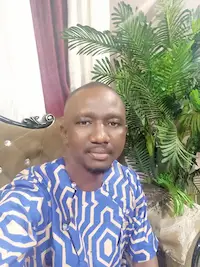

Umaru Bayoh | WDD 130
Hello! My name is Umaru Bayoh and I am from Freetown, Sierra Leone. I enjoy worshiping with brethrens in the church, spending time with my family, and exploring new things. I am currently studying Web & Computer Programming at BYU Idaho online. I hope and pray to be a professional in this field and be able to build new things that will improve human welfare in this world. I have a growing interest in web development and am excited to build a strong foundation in HTML, CSS, and responsive design. This course is a great opportunity for me to develop practical skills and gain hands-on experience creating websites. I enjoy learning new technologies and look forward to applying what I learn to future projects. Beyond academics, I enjoy problem-solving, learning new skills, and challenging myself creatively. I’m also interested in how technology can be used to improve lives and bring people together. Through this course, I hope to gain confidence in my coding abilities and eventually explore more advanced areas like JavaScript, databases, and full-stack development. In addition to web development, I value personal growth and education, and I’m grateful to be part of the BYU Idaho learning community.